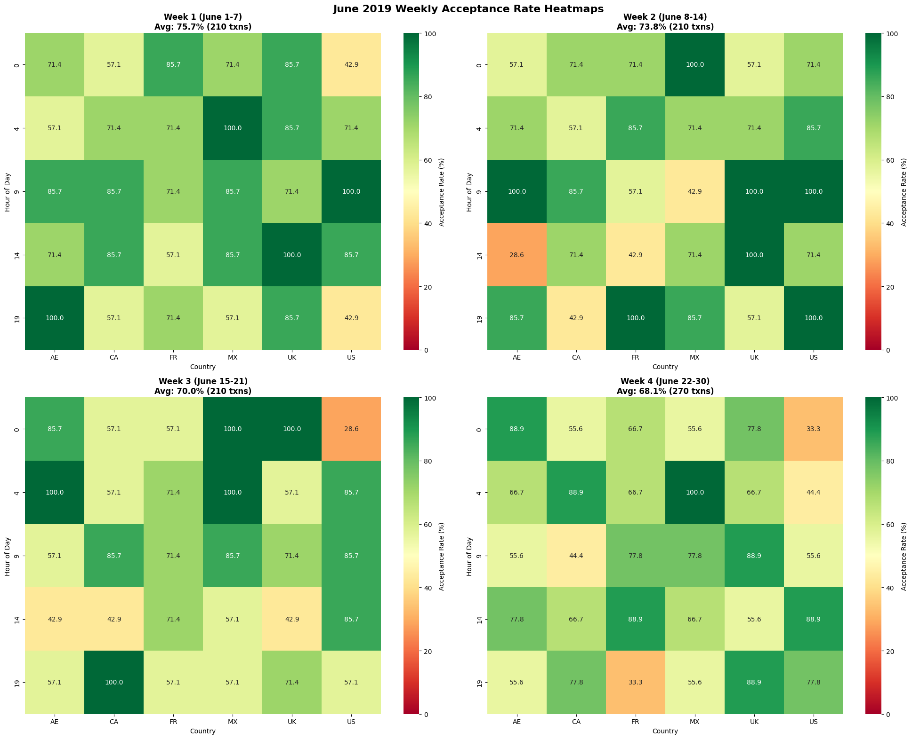
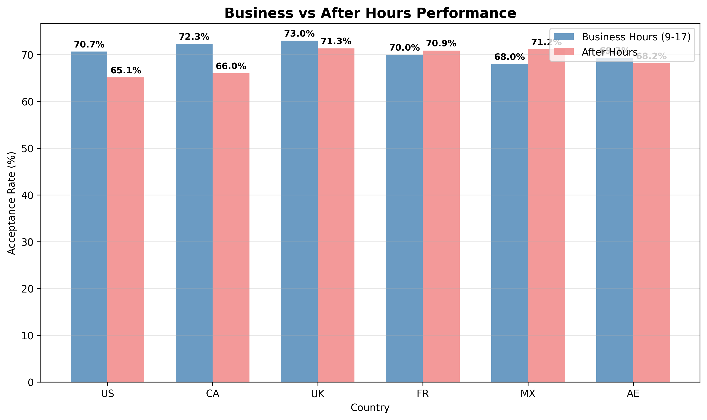
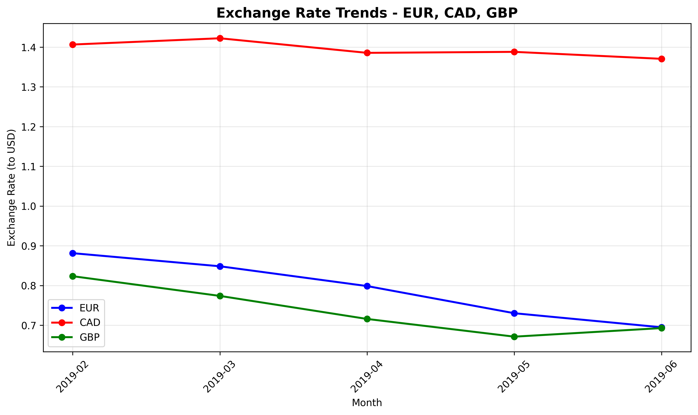

Payment Processing: Hypotheses & Root Cause Analysis
Primary Hypothesis: Processing Infrastructure Stress
Hypothesis H1: Processing system degradation causing systematic performance decline High Confidence
🔍 Supporting Evidence:
- Systematic Weekly Progression: June shows consistent degradation Week 1 (75.7%) → Week 4 (68.1%)
- Geographic Concentration: US (-18.0 pts) and FR (-10.0 pts) account for majority of decline
- Baseline Comparison: May 2019 performance (69.4%) vs June start (75.7%) confirms June-specific onset
- US Hour-Specific Degradation: Concentrated performance decline in specific operational windows across weeks
- FR Time-Based Clustering: Similar hourly concentration patterns observed in France
- Cross-Week Progression: Hourly problem areas expanding and intensifying from Week 1 to Week 4
- Geographic Consistency: CA and other countries show stable hourly patterns, confirming US/FR-specific issues
- Infrastructure Signature: Time-clustering suggests system capacity or processing bottlenecks rather than random failures
📊 Hourly Performance Heatmaps: June 2019 Weekly Patterns

Secondary Hypothesis: Operational Time Dependencies
Hypothesis H2: Business hours processing optimization imbalances Moderate Confidence
🔍 Supporting Evidence:
- US Business Hours Advantage: +5.6 percentage points during 9-17 local time
- CA Business Hours Advantage: +6.3 percentage points during 9-17 local time
- Geographic Consistency: Similar time-based patterns across different regions
- Hourly June Patterns: Problem hours clustered in specific time windows, not uniformly distributed
📊 Business vs After Hours Performance Comparison

Tertiary Hypothesis: Exchange Rate Impact on Card Limits
Hypothesis H3: Exchange rate changes causing debit card limit failures due to insufficient funds Moderate Confidence
🔍 Supporting Evidence:
- EUR Rate Weakening: -21.2% exchange rate decline means EUR purchases require more local currency, potentially hitting card limits
- CAD Rate Decline: -2.6% exchange rate decline increases CAD transaction costs in local currency terms
- GBP Stability Advantage: Stable exchange rates mean predictable costs, less likely to exceed available funds
- Card-on-File Context: Debit cards have daily/monthly limits that become constraining when exchange rates increase costs
- Temporal Alignment: Currency decline periods (CAD March-June, EUR April-June) match acceptance rate deterioration
📈 Exchange Rate Trends: EUR, CAD, GBP vs USD

📊 Currency Performance Trends: Acceptance Rates Over Time

Alternative Hypotheses
H4: Fraud Detection System Changes
Hypothesis: Fraud prevention algorithm updates causing legitimate transaction blocks Low Confidence
🔍 Supporting Evidence:
- Geographic Patterns: Concentrated impact in specific regions (US/FR) typical of fraud rule targeting
- Sudden Onset: June decline start could align with algorithm deployment
- Lack of typical fraud pattern signatures (random distribution, transaction amount clustering)
H5: Regulatory/Compliance Changes
Hypothesis: New payment regulations or compliance requirements affecting processing Low Confidence
🔍 Limited Supporting Evidence:
- Geographic Concentration: Could reflect regional regulatory changes
- Timing: June implementation could align with regulatory deadlines
- No known major regulatory changes in target regions during this period
- Gradual weekly decline not typical of compliance requirement impacts
H6: Partner Bank/Processor Issues
Hypothesis: Downstream financial institution capacity or policy changes Low Confidence
🔍 Supporting Evidence:
- Geographic Patterns: Regional banking infrastructure could create geographic concentration
- Systematic Decline: Bank capacity constraints could create progressive degradation
- Currency Correlation: Bank risk tolerance adjustments could affect specific currencies
- Would require external validation with banking partners
- Multiple currencies/regions affected suggests system-wide rather than bank-specific issues
Impact Assessment & Confidence Analysis
💰 Potential Impact Assessment:
- June Infrastructure Issues: High impact potential - 7.6 percentage point decline observed in June 2019
- Currency Processing (EUR/CAD): Moderate impact potential - systematic decline patterns observed for volatile currencies
- Business Hours Optimization: Moderate impact potential - consistent performance gaps identified between business and after hours
- Alternative Hypotheses: Lower impact potential - requires additional validation and analysis
Specific volume recovery amounts can be derived through detailed analysis of each hypothesis, considering transaction volumes, affected time periods, geographic distribution, and currency exposure. Such calculations would require additional operational data and should account for potential overlaps between hypotheses.